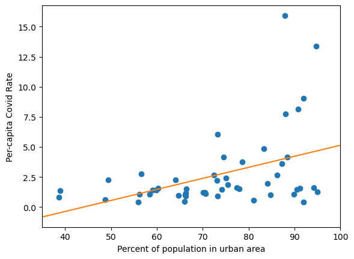
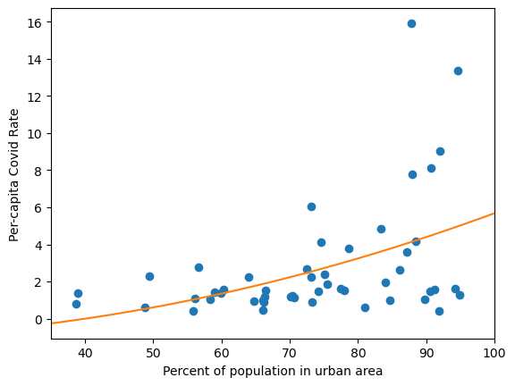
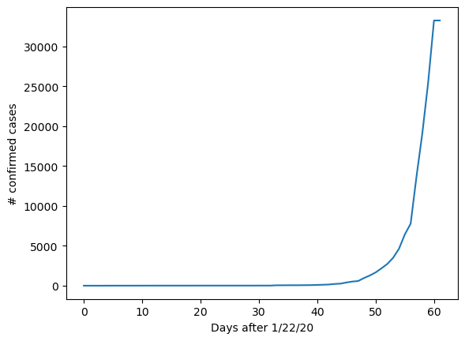
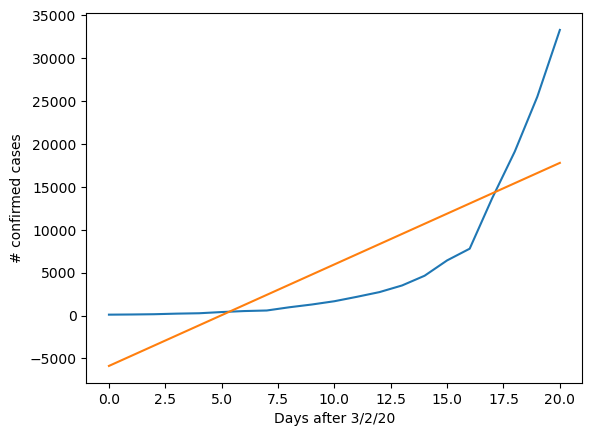
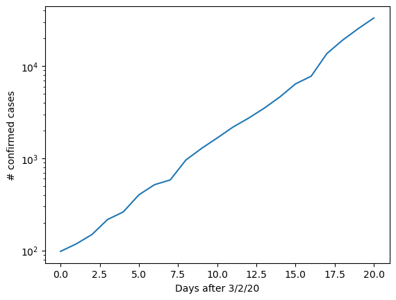
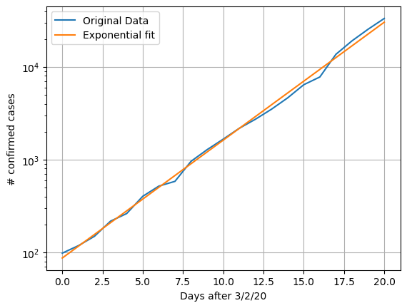

Nonlinear Regression Tests
Contents
11.6. Nonlinear Regression Tests#
Consider again the scatter plot of the Covid data that we have been working with, along with the best line of fit from liner regression:
import pandas as pd
import matplotlib.pyplot as plt
import numpy as np
import scipy.stats as stats
covid = pd.read_csv(
"https://raw.githubusercontent.com/jmshea/Foundations-of-Data-Science-with-Python/main/03-first-data/covid-merged.csv"
)
covid.set_index("state", inplace=True)
covid["cases_norm"] = covid["cases"] / covid["population"] * 1000
urban =covid['urban'].to_numpy()
cases_norm = covid['cases_norm'].to_numpy()
plt.scatter(urban, cases_norm)
plt.xlabel("Percent of population in urban area")
plt.ylabel("Per-capita Covid Rate");
regress1 = stats.linregress(urban, cases_norm)
m2 = regress1.slope
b2 = regress1.intercept
u = np.arange(35, 101)
plt.plot(u, m2 * u + b2, color = 'C1');
plt.xlim(35, 100);

Our previous tests show that this data is better fit by a line with positive slope (corresponding to a positive correlation) than a line with zero slope (corresponding to zero correlation) and that the correlation is statistically significant at the \(p<0.05\) level, with a \(p\)-value of approximately 0.002. However, this does not mean that a line is the best function to fit this data. The fact that the line fits the middle section of the data (in terms of urban) well but that many data points at high values of urban are far above the line suggests that a nonlinear relation might achieve a lower MSE.
Doesn’t our method require a linear relationship? The answer is both yes and no. It only has to be linear in the coefficients. To make it more clear what this means, suppose we want to model the relationship using the quadratic equation \(\hat{y}_i = a x_{i}^{2} +b\). It doesn’t matter that we have \(x_{i}^{2}\) instead of \(x_i\) in the equation. The \(a\) and \(b\) still act on \(x_{i}^{2}\) in a linear fashion. In fact, we can still use stats.linregress(), but for our example, instead of passing the arguments urban and cases_norm, we will pass the argument urban**2 and cases_norm:
qregress = stats.linregress(urban**2, cases_norm)
print(qregress)
LinregressResult(slope=0.00067648448775163, intercept=-1.084783510004724, rvalue=0.4438137359403984, pvalue=0.0012449801713965193, stderr=0.00019715245908289193, intercept_stderr=1.179362044018392)
The resulting relationship is approximately \(\hat{y}_i = 0.00068 x_{i}^{2} -1.1\), and is shown in the figure below:
plt.scatter(urban, cases_norm)
plt.xlabel("Percent of population in urban area")
plt.ylabel("Per-capita Covid Rate");
mq = qregress.slope
bq = qregress.intercept
u = np.arange(35, 101)
plt.plot(u, mq * u**2 + bq, color = 'C1');
plt.xlim(35, 100);

The value of \(r^2\) achieved by linear and quadratic regression are:
print(f'Linear: r^2 = {regress1.rvalue**2: .2g}')
print(f'Quadratic: r^2 = {qregress.rvalue**2: .2g}')
Linear: r^2 = 0.18
Quadratic: r^2 = 0.2
So, quadratic regression achieve a slightly higher proportion of explained variance.
Problem
Experiment with using other powers of urban in the linear regression. What power achieves the best \(r^2\)?
11.6.1. Non-polynomial Regression#
Note that we are not limited to polynomial functions of the explanatory variable. We may use any function that we think explains the relationship. To provide a very good demonstration of this, we introduce another Covid data set that the students in my data science class used to analyze the spread of Covid-19 in early 2020.
We will use data from the COVID-19 Data Repository by the Center for Systems Science and Engineering (CSSE) at Johns Hopkins University (JHU CSSE COVID-19 Data). The entire repository is available here: https://github.com/CSSEGISandData/COVID-19. This data is licensed under the Creative Commons Attribution 4.0 International license (CC BY 4.0).
We will use the archived time series data for confirmed cases, which gives the number of confirmed cases by location (rows) and date (columns). The data can be directly access from the JHU CSSE Covid-19 Data GitHub repository as shown below (an alternate URL is provided in the comment).
csse_github = 'https://raw.githubusercontent.com/CSSEGISandData/COVID-19/master/'
data_path = 'archived_data/archived_time_series/'
file_name = 'time_series_19-covid-Confirmed_archived_0325.csv'
covid_ts = pd.read_csv(csse_github + data_path + file_name)
The first five rows of the file are shown below:
covid_ts.head()
| Province/State | Country/Region | Lat | Long | 1/22/20 | 1/23/20 | 1/24/20 | 1/25/20 | 1/26/20 | 1/27/20 | ... | 3/14/20 | 3/15/20 | 3/16/20 | 3/17/20 | 3/18/20 | 3/19/20 | 3/20/20 | 3/21/20 | 3/22/20 | 3/23/20 | |
|---|---|---|---|---|---|---|---|---|---|---|---|---|---|---|---|---|---|---|---|---|---|
| 0 | NaN | Thailand | 15.0000 | 101.0000 | 2 | 3 | 5 | 7 | 8 | 8 | ... | 82 | 114 | 147 | 177 | 212 | 272 | 322 | 411 | 599 | 599.0 |
| 1 | NaN | Japan | 36.0000 | 138.0000 | 2 | 1 | 2 | 2 | 4 | 4 | ... | 773 | 839 | 825 | 878 | 889 | 924 | 963 | 1007 | 1086 | 1086.0 |
| 2 | NaN | Singapore | 1.2833 | 103.8333 | 0 | 1 | 3 | 3 | 4 | 5 | ... | 212 | 226 | 243 | 266 | 313 | 345 | 385 | 432 | 455 | 455.0 |
| 3 | NaN | Nepal | 28.1667 | 84.2500 | 0 | 0 | 0 | 1 | 1 | 1 | ... | 1 | 1 | 1 | 1 | 1 | 1 | 1 | 1 | 2 | 2.0 |
| 4 | NaN | Malaysia | 2.5000 | 112.5000 | 0 | 0 | 0 | 3 | 4 | 4 | ... | 238 | 428 | 566 | 673 | 790 | 900 | 1030 | 1183 | 1306 | 1306.0 |
5 rows × 66 columns
This file includes data for countries and for US states and cities. We can limit this to just the entries for the united states using the query() method:
us = covid_ts.query ('`Country/Region` == "US"')
us.head()
| Province/State | Country/Region | Lat | Long | 1/22/20 | 1/23/20 | 1/24/20 | 1/25/20 | 1/26/20 | 1/27/20 | ... | 3/14/20 | 3/15/20 | 3/16/20 | 3/17/20 | 3/18/20 | 3/19/20 | 3/20/20 | 3/21/20 | 3/22/20 | 3/23/20 | |
|---|---|---|---|---|---|---|---|---|---|---|---|---|---|---|---|---|---|---|---|---|---|
| 98 | Washington | US | 47.4009 | -121.4905 | 0 | 0 | 0 | 0 | 0 | 0 | ... | 572 | 643 | 904 | 1076 | 1014 | 1376 | 1524 | 1793 | 1996 | 1996.0 |
| 99 | New York | US | 42.1657 | -74.9481 | 0 | 0 | 0 | 0 | 0 | 0 | ... | 525 | 732 | 967 | 1706 | 2495 | 5365 | 8310 | 11710 | 15793 | 15793.0 |
| 100 | California | US | 36.1162 | -119.6816 | 0 | 0 | 0 | 0 | 0 | 0 | ... | 340 | 426 | 557 | 698 | 751 | 952 | 1177 | 1364 | 1642 | 1642.0 |
| 101 | Massachusetts | US | 42.2302 | -71.5301 | 0 | 0 | 0 | 0 | 0 | 0 | ... | 138 | 164 | 197 | 218 | 218 | 328 | 413 | 525 | 646 | 646.0 |
| 102 | Diamond Princess | US | 35.4437 | 139.6380 | 0 | 0 | 0 | 0 | 0 | 0 | ... | 46 | 46 | 47 | 47 | 47 | 47 | 49 | 49 | 49 | 49.0 |
5 rows × 66 columns
We can select the date columns (4 to the end) using the iloc member and apply the sum() method to the numeric columns, which will give us a Pandas Series containing the sums by date:
us_sums = us.iloc[:, 4:].sum()
us_sums
1/22/20 1.0
1/23/20 1.0
1/24/20 2.0
1/25/20 2.0
1/26/20 5.0
...
3/19/20 13677.0
3/20/20 19100.0
3/21/20 25489.0
3/22/20 33272.0
3/23/20 33276.0
Length: 62, dtype: float64
Now let’s plot this data to see what type of trend the data might follow:
plt.plot(range(len(us_sums)), us_sums);
plt.xlabel('Days after ' + us_sums.index[0]);
plt.ylabel('# confirmed cases');

Before day 40, there are fewer than 100 cases, so that is before there was significant spread of Covid-19 in the US. We will neglect this in our analysis. The data for the last day (3/23/20) is approximately equal to the data for 3/22/20. This is completely unreasonable given the other data, and this inconsistency does not occur in other data sources, so we will also neglect this last data point.
Let’s create a new variable with this restricted range of dates
us_sums2 = us_sums[40:-1]
If we apply simple linear regression to fit a line to this data, we get the following:
days = range(len(us_sums2))
linregress = stats.linregress( days, us_sums2)
print('Linear regression results:')
print(linregress)
Linear regression results:
LinregressResult(slope=1182.812987012987, intercept=-5874.367965367965, rvalue=0.7918310126827925, pvalue=1.8962366136262553e-05, stderr=209.29715062003598, intercept_stderr=2446.778281444334)
The correlation coefficient is 0.79, which is not that low, but consider the regression line versus the data:
plt.plot(days, us_sums2);
plt.xlabel('Days after ' + us_sums2.index[0]);
plt.ylabel('# confirmed cases');
# Linear regression line of fit:
plt.plot(days, linregress.slope * days + linregress.intercept,
color = 'C1');

It should be clear that a line is not a good match to this data. The rate of increase is so fast that it is likely that the trend is not polynomial, but instead is exponential in the number of days. We can easily check this by plotting the data on a logarithmic \(y\)-axis, which we can do by calling plt.semilogy() instead of plt.plot():
plt.semilogy(range(len(us_sums2)), us_sums2);
plt.xlabel('Days after ' + us_sums2.index[0]);
plt.ylabel('# confirmed cases');

The relationship on a semi-log plot looks very linear! This implies that the number of cases is approximately exponential in the number of days since March 2, 2020.
To fit an exponential to this data, the best approach is to take the logarithm of the response variable (us_sums2) and then use linear regression with the original explanatory variable (days):
lsums2 = np.log(us_sums2)
log_regress = stats.linregress(days, lsums2)
print('The results of linear regression with the log')
print('of the response variable are given below')
print(log_regress)
The results of linear regression with the log
of the response variable are given below
LinregressResult(slope=0.29279085934968946, intercept=4.463762377627778, rvalue=0.9986660182940911, pvalue=6.358166829116286e-26, stderr=0.003473005672719476, intercept_stderr=0.040601005919903344)
From these results we can get the following estimate:
Taking \(e\) to the power of both sides gives
Note that the value of the second term is approximately
c = np.exp(log_regress.intercept)
print(c)
86.81352067039107
So, the exponential relationship can be written as
Note the value of \(r^2\) (using the logarithmic data) is now
log_regress.rvalue ** 2
0.9973338160953739
which is exceptionally high! Checking the plot of the estimate versus the original data, it is easy to see how great this exponential fit is:
plt.semilogy(range(len(us_sums2)), us_sums2,
label = 'Original Data');
plt.xlabel('Days after ' + us_sums2.index[0]);
plt.ylabel('# confirmed cases');
# Exponential fit
exp_estimate = c * np.exp( log_regress.slope * days)
plt.semilogy(days, exp_estimate,
color = 'C1', label = 'Exponential fit');
plt.legend();
plt.grid();

We have found that the data is growing exponentially and have the equation for the exponential curve based on finding the linear regression curve on the logarithm of the response variable. However, the fact that the number of confirmed cases grows as \(\exp(0.293x)\), where \(x\) is the number of days, is not very easy to interpret by the public. To make this more clear, we often calculate the number of days that it takes cases to double, which we can solve as
which is approximately
np.log(2) / log_regress.slope
2.367379849560459
The number of cases is doubling every 2.37 day! Similarly, the number of days to increase by a factor of 10 is
np.log(10) / log_regress.slope
7.864265633525107
This value is easier to interpret on the semi-log graph of the data that the doubling rate. Based on this rate, we can see that the number of cases should increase by a factor of 100 about every 15.7 days. Looking at day 0 of the graph, there are approximately 100 cases, and on day 16, there are about 80,000 cases, so the relation holds approximately.
We can also solve for the number of days when the US would hit 100,000 cases with no mitigation strategies:
The number of days to reach 100,000 cases is approximately
np.log(10 ** 6/86.8)/0.293
31.917760874737098
Since day 0 for our calculations is March 2, 2020, we could have expected to reach 100,000 cases in the US by approximately April 3, 2020. According to the cumulative case data on Statista at https://www.statista.com/statistics/1103185/cumulative-coronavirus-covid19-cases-number-us-by-day/, 100,000 confirmed cases was reached sometime between March 27, 2020 and April 3, 2020, and was likely reached by March 28, 2020, indicating that either our estimate of the exponential rate of growth was too low or the rate of growth increased with time. Such fast rates of growth motivated the government-mandated measures to reduce the spread of Covid in 2020.
In this section, we have seen that “linear” regression can actually be applied to a variety of different relationships between data through appropriate transforms of the explanatory or response variables. In Chapter 14, we will introduce more powerful approaches for determining these relationships using techniques for solving sets of simultaneous linear equations.